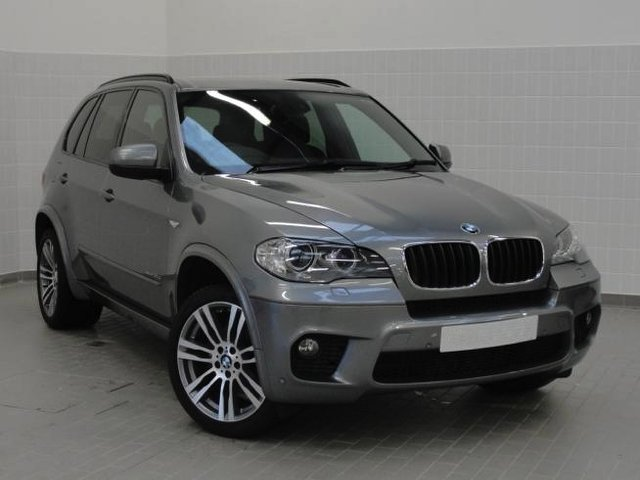
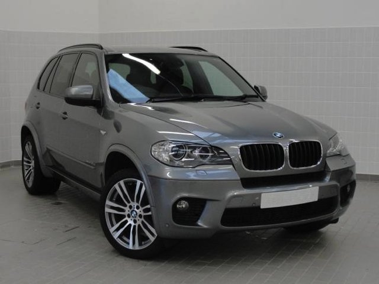

How it works
Enquire
The process starts with you sending an email or calling us now for a no obligation quote to import your next vehicle from the UK.
You tell us what you want and through our UK Network we will find your new or used vehicle. You can be as detailed as you like with the specifications or you can just give us a budget and we can tell you what will work out best for you.
Many people are pleasantly surprised to find they can get a newer vehicle than expected or are able to save thousands.
With this information we are able to begin our search and in most cases we can get back to you within 2-3 working days.
Stock Variety
All makes and models are on offer, but we find the best value is to be found with the high-end European marquees. Our partners in the UK are trustworthy business partners so you can rest assured we will get you the best deal.
Detailed Vehicle Information
We will be able to provide you with all relevant information including year, mileage, colour, transmission, specifications and equipment lists. Our UK partners inspect each car to ensure that they will meet the highest standards.
Payment
Once you accept to purchase the vehicle, European Direct will work with you to manage the payment process, including arranging finance* if required and any currency conversions.
*Love & Co. can arrange finance at competitive rates through our finance partners for approved purchasers.
Shipping
In most cases it will take 2 weeks for us to carry out final inspections, purchase the vehicle, prepare it for shipping and book your vehicle on the soonest vessel leaving the UK. Once your vehicle has been loaded, we will inform you of the vessel name and estimated arrival date, which is approximately 6 weeks after leaving the UK.
Compliance and Delivery
As soon as your vehicle arrives we will arrange for it to be delivered to compliance where it will go through a review to confirm it meets New Zealand’s standards. This is required for all cars imported into the country. It usually takes 3-4 working days for the vehicle to gain compliance -this is dependent on the workload at the time of the compliance center.
Your vehicle will then be issued with a Warrant of Fitness (WOF) for a minimum of 6 months.
European Direct will register your vehicle and organise the vehicle to be valeted and delivered to your desired destination.
Warranty
Most new or nearly new vehicles come with a worldwide manufacturer’s warranty.
European Direct can arrange a New Zealand warranty at a competitive rate for ease of mind on vehicles that do not fit into the manufactures global warranty or where the warranty has expired.
Time Frame
Once your vehicle has been purchased allow 8-10 weeks for the vehicle to be delivered to you. 2 weeks in the UK, 6 weeks on the water and 2 weeks on our side. This may vary slightly depending on shipping schedules.
 
